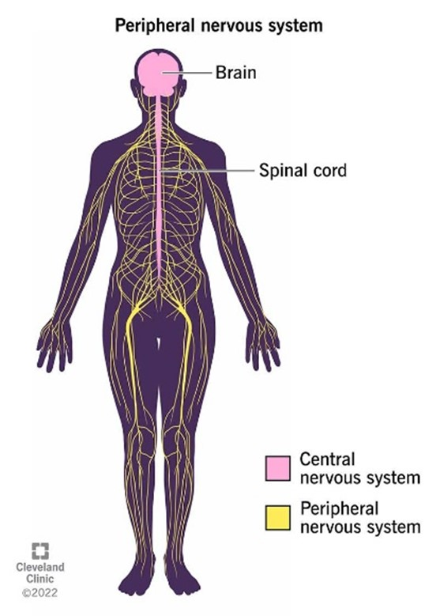

Unit 1: Biological Bases of Behavior
Topic 1.2: Overview of the Nervous System
Last Updated: June 22, 2026
The Big Picture: The Biological Information Highway
Imagine your body as a massive, high-tech city. For this city to function without descending into total chaos, it needs an incredibly sophisticated communications network. Power lines must carry signals to traffic lights, emergency systems need to sound alarms at a moment's notice, and maintenance crews must quietly keep utilities running in the background.
In your body, that communications network is the nervous system. It handles everything from the voluntary choice to tap a button on your phone to the automatic, involuntary beating of your heart. Let’s map out the body’s biological information highway.
1. The Command Center: The Central Nervous System
At the absolute center of this entire network sits the main operations headquarters.
- Central Nervous System: The division of the nervous system consisting of the brain and spinal cord, which processes information and coordinates the body’s responses.
Think of the central nervous system as your body's primary computer. It takes in sensory data, evaluates options, and coordinates complex responses. However, an elite computer isn’t very useful if it remains completely isolated from the rest of the world.
2. The Branches: The Peripheral Nervous System
To solve this isolation problem, the central command center relies on a massive web of cables traveling throughout the rest of your body.
- Peripheral Nervous System: The sensory and motor neurons that connect the central nervous system to the rest of the body.
The word "peripheral" means on the edge or outside. Any neuron that isn't trapped inside your skull or your spinal column belongs to this outer network. The peripheral nervous system acts as the ultimate middleman, constantly relaying messages back and forth.
To keep things organized, this outer network splits into two major structural divisions based on whether you are consciously controlling the action:
- Somatic Nervous System: The division of the peripheral nervous system that controls the body's skeletal muscles (voluntary movements). Whenever you deliberately choose to raise your hand in class, kick a soccer ball, or type on a keyboard, your somatic nervous system carries those explicit commands directly to your skeletal muscles.
- Autonomic Nervous System: The division of the peripheral nervous system that automatically regulates involuntary body functions such as heartbeat, breathing, digestion, and gland activity. The word "autonomic" sounds like "automatic," which is the perfect way to remember its function. You don't have to consciously remind your stomach to digest breakfast or tell your lungs to expand; this system manages those critical internal processes smoothly in the background.

The peripheral nervous system splits down into branches that handle either our conscious interactions (somatic) or automatic regulatory drives (autonomic). Image courtesy of Wikimedia Commons.
3. Involuntary Control: Sympathetic vs. Parasympathetic
While the Autonomic Nervous System handles things automatically, its job changes dramatically depending on whether you are facing a crisis or relaxing at home. Because of this, it splits into two legendary, opposing subsystems that are often heavily tested on the AP exam:
- Sympathetic Nervous System: The division of the autonomic nervous system that activates the body’s “fight-or-flight” response during stress or danger, increasing alertness and preparing the body for action. Imagine you are walking through the woods and suddenly come face-to-face with a bear. Instantly, your sympathetic nervous system kicks into overdrive. It accelerates your heartbeat, dilates your pupils to let in more light, expands your lungs to maximize oxygen intake, and temporarily slows down digestion so your energy can be diverted toward survival.
- Parasympathetic Nervous System: The division of the autonomic nervous system that calms the body and conserves energy by promoting “rest-and-digest” functions after a stressful situation. Once you safely escape the danger and sit down in your room, this system takes over to restore equilibrium. It slows your racing heart, constricts your pupils back to normal, and restarts your digestive tract. It acts as the biological brakes to bring your body back down to its baseline state.
An encounter between a dog and cat illustrates the classic physiological fight-or-flight response governed by the sympathetic nervous system. Image courtesy of Wikimedia Commons.
4. Don't Trip Up! (Common Misconceptions)
⚠️ Somatic vs. Autonomic: Remember that Somatic is for voluntary skeletal muscle control (think Soma = body, and you choose how to move your body). Autonomic is for involuntary visceral control (think Autonomic = Automatic).
🔍 Exam Tip: AP exam questions love to give you a real-world scenario and ask which system is responsible. If a scenario involves a racing heart, sweaty palms, or public speaking anxiety, look for the Sympathetic Nervous System. If it involves relaxing on the couch, sleeping, or recovering from a scare, look for the Parasympathetic Nervous System.
5. Level Up Your Score: Interactive Review
Now that you have mapped out the divisions of the human nervous system, make sure these pathways are locked into your long-term memory using our interactive platform tools:
- Flashcard Flip: Hop over to our Flashcards page, select Unit 1, and make sure you can instantly define terms like Autonomic versus Somatic nervous systems. Try switching to "Definition First" mode to challenge your active recall!
- Cortex Commander: Defend your fleet by tackling high-yield biology questions! See if you can accurately identify which nervous system subsystem is at play before your opponent sinks your battleships in Cortex Commander.
- Psych Land: Roll the dice and travel through Psych Land to test your knowledge of how the central nervous system coordinates with peripheral pathways in our engaging board-game layout.
- Topic 1.2 Quiz: Put your knowledge to the ultimate test with our dedicated practice quiz tailored specifically to the structural divisions of the nervous system. Check your mastery of these 6 essential terms!